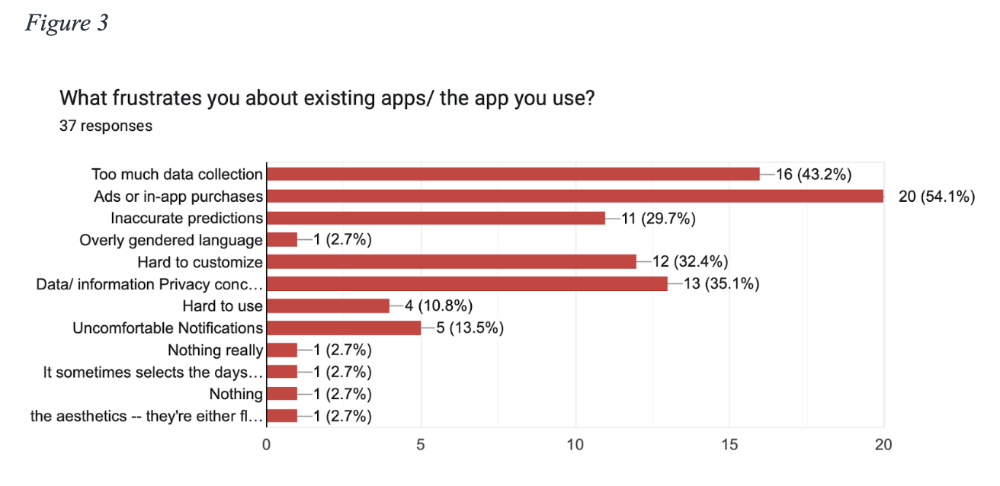
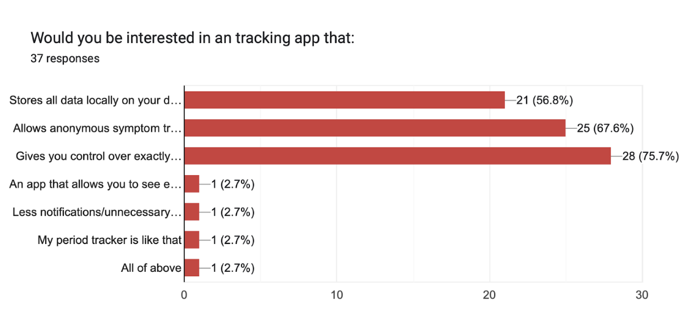
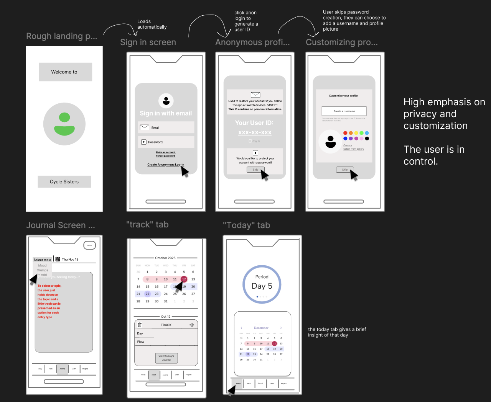
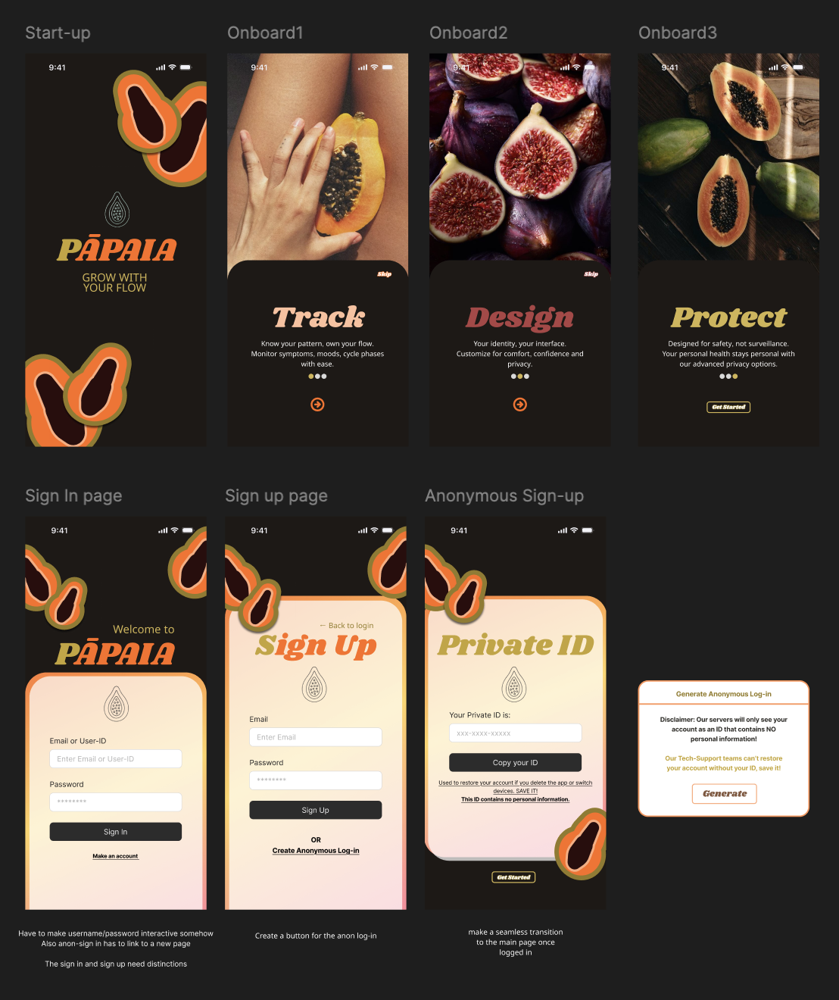
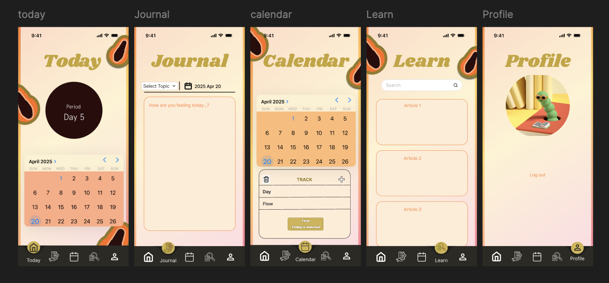

UX Research · HCI · Prototyping
Pāpaia: Designing a privacy-first cycle tracking experience.
A mobile app concept focused on privacy, inclusive tracking, flexible symptom journaling, and simple navigation for sensitive health information.
Problem
Many cycle-tracking apps feel overwhelming, ad-heavy, expensive, or unclear about how sensitive data is stored. This can make users hesitant to track consistently and reduce trust in the product.
My contribution
- Helped create all three levels of fidelity: wireframe, mid-fidelity prototype, and high-fidelity walkthrough.
- Interviewed 2 of the 6 research participants during the high-fidelity phase.
- Created the survey scoring sheet used to translate interview responses into research insights.
- Helped connect findings around privacy, simplicity, and personalization to design decisions.
Research
- 6 hybrid structured interviews with menstruating participants aged 18–25.
- 37-response anonymous survey across age groups using snowball sampling.
- AEIOU observational framework to understand behavior around tracking tools.
Research Artifacts
Survey findings that shaped the product direction
Our research showed that users wanted quick logging, fewer menus, stronger privacy controls, personalization, and less cognitive load. These findings helped shape the app’s privacy-first design direction.


Prototype Evolution
From wireframes to high-fidelity design
I helped create the wireframe, mid-fidelity, and high-fidelity walkthroughs for Pāpaia. The design evolved around anonymous onboarding, private ID generation, quick logging, journaling, calendar tracking, and clearer user control.



Key insights
Simplicity
Users wanted quick logging, fewer menus, and less cognitive load.
Personalization
Users wanted to track mood, pain, energy, sleep, and emotional support, not only period prediction.
Privacy
Users expressed discomfort with ads, data sharing, unclear storage practices, and required logins.
Trust
Clear onboarding, local/restricted data storage, and transparent controls became core product priorities.
Design direction
We prioritized anonymous onboarding, a private ID option, flexible symptom journaling, discreet menu labels, a calm visual style, and a simple five-page layout.
Testing & iteration
Testing showed that users liked the simple layout and quick symptom logging, but wanted clearer privacy options and more personalization. We responded by reducing steps, improving privacy settings, and making the interface feel more supportive and calm.
Reflection
This project showed me that designing for sensitive information is not just about features. It is about trust, clarity, emotional comfort, and giving users confidence that they control their data.